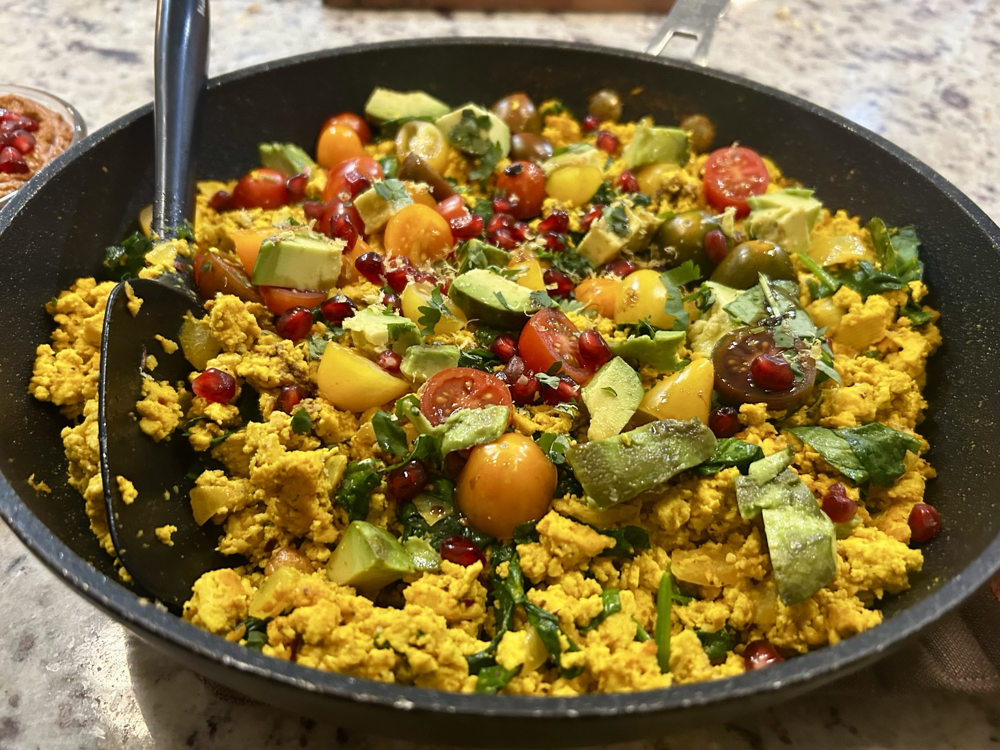
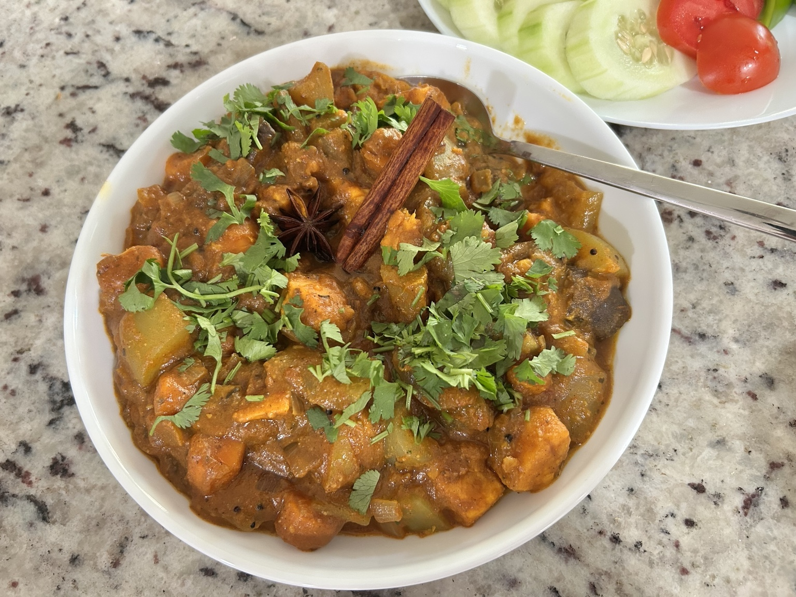

Main
Chicken Shish / Chicken Tawook
Yoghurt-spiced chicken breast skewers with cumin, paprika, Aleppo pepper, sumac, and a simple tahini sauce.
TT's food blog: a personal cooking journal
A quiet archive of things made, tested, changed, and worth returning to.
Main
Yoghurt-spiced chicken breast skewers with cumin, paprika, Aleppo pepper, sumac, and a simple tahini sauce.

Main
Savoury tofu scramble with tahini, turmeric, greens, tomatoes, avocado, and pomegranate.

Breakfast
Chocolate baked oats soaked with coffee and finished with a cool Greek-yogurt top.

Breakfast
Georgian beet dip.

Bread
A small whole-wheat sourdough loaf made with an active rye starter.
Main
A simple home Neapolitan-style pizza built around a soft, well-fermented dough.

Dessert
A Polish egg-yolk dessert, whipped until pale, thick, and almost mousse-like.

Main
A gently spiced vegetable curry with a creamy, aromatic sauce.
About
For me, cooking is an art with an ephemeral character. The fleeting parts matter most: the exact texture, aroma, heat, timing, and appearance exist only once. Even when the same recipe is repeated, no outcome is ever exactly the same.
Recipes are kept in one simple format: ingredients, method, serving, notes, and nutrition when available. Nothing more than needed.